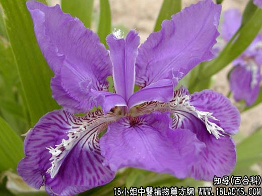

【中药概述】
知母为百合科草本植物知母的根茎。苦、甘、寒。归肺、胃、肾经。
1．清热泻火：用于温热病，高热烦渴、脉洪大等肺胃实热证（胃火牙痛），能清热泻火，常与石膏配伍，如（白虎汤、玉女煎）。
2．养阴润燥：用治肺热咳嗽或阴虚燥咳，既能清肺热，又能润肺燥，如（二母丸）。
3．滋阴退热：用于阴虚火旺，骨蒸潮热、盗汗梦遗，常与黄柏相须为用。如（<医宗金鉴>知柏地黄丸）。
4．用于阴虚消渴，与天花粉，麦冬，五味等配伍，如（玉液煎）。
【药效鉴别】
知母性守而不走，用于肺热燥咳，阳阴热重津液已伤者为滋阴降炎之品，偏于滋。既能清实热，又可退虚热。“上清肺金而泻火，下润肾燥而滋阴”。
【药理作用】
1.抗菌作用，对葡萄球菌、伤寒杆菌、痢疾杆菌、大肠杆菌、枯草杆菌等有不同的抑制作用；
2.对实验发热动物有解热作用；
3.可使肝糖元下降、横膈糖元升高；
4.能促进脂肪组织对葡萄糖的摄取。
【化学成分】
含知母甙、黄酮甙、多量粘液质、醣类、少量脂肪油和芳香性物质、烟酸。
【用量用法】
6——30g，水煎服，或入丸散剂。
【使用注意】
脾虚便溏者不宜。
【附】
盐知母：苦寒。归肺、胃、肾经。引药下行入肾，增强滋阴降火的功效，多用于肾虚火旺症。常与黄柏 熟地 丹皮等同用。